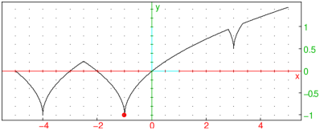
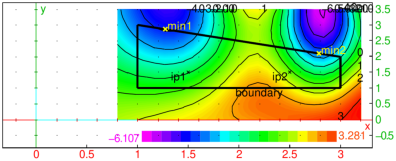

16.3.1 Univariate global minimization on a segment
The find_minimum
command is used for global minimization of a continuous
function on a segment.
-
find_minimum takes between three and five arguments:
-
f, a continuous univariate function or expression.
- a, a real number.
- b, a real number such that a<b.
- Optionally, a sequence of one or two numbers, each of which being either:
-
ε∈⟨ 0,1⟩, the optimality tolerance (by default, ε=epsilon()2/3), or
- n∈ℤ, the maximum number of iterations (n≥ 1 is required)
for Brent’s method subroutine (by default, n=100).
- find_minimum(f,a,b ⟨,ε,n ⟩) returns
the location of the smallest local minimum found.
- find_minimum applies a modification of Brent’s algorithm which usually finds a global
minimum, even when f has several local extrema.
The original Brent’s method, which searches for a local minimum,
is used as a subroutine which is applied recursively by
partitioning the search interval. Each instance is allowed the maximum of n iterations.
Examples
We minimize a function which has several local extrema, one of which is global.
| f(x):=Airy_Ai(x+sin(x))+cos(x^2):;
x0:=find_minimum(f(x),-5,5) |
| plot(f(x),x=-5..5); point(x0,f(x0),display=point_width_3+point_point+red) |

The objective function in the example below is unimodal,
with a single local minimum which is also the global minimum.
| f(x):=besselJ(x,2)/Gamma(x+1)+(x+1)^sin(x):;
x0:=find_minimum(f(x),0,10) |
| plot(f(x),x=0..10); point(x0,f(x0),display=point_width_3+point_point+red) |

The function f defined below is continuous but not differentiable.
It has three local and only one global minimum at x0=−1. Note that we are passing the function
itself as the first argument. Also, the parameters ε and n are set to 10−5
and 30, respectively.
| f(x):=min(sqrt(abs(x+4))-1,sqrt(abs(x+1))-1005/1000,sqrt(abs(x-3))+1/2):;
x0:=find_minimum(f,-5,5,1e-5,30) |
| plot(f(x),x=-5..5,xstep=5e-4);
point(x0,f(x0),display=point_width_3+point_point+red) |